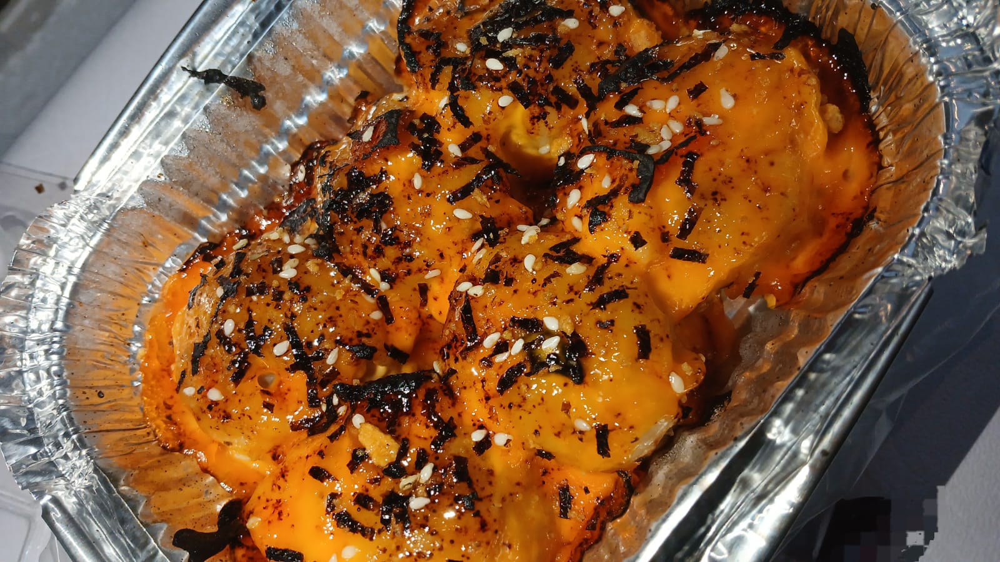
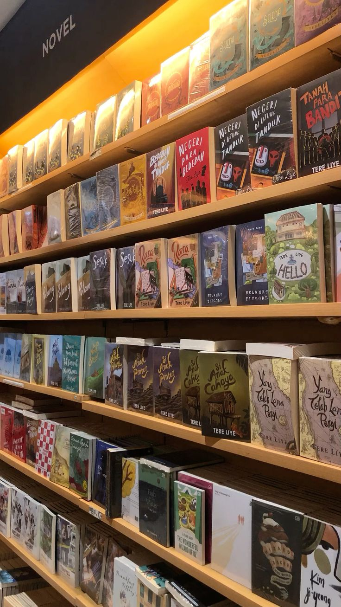

𐙚 Artikel Nara ⋆˚꩜｡
🪼⋆｡𖦹°🫧⋆.ೃ࿔*:･
Artikel ini sepenuhnya tentang diriku — hal-hal yang aku sukai dan tidak sukai, hobiku, serta momen-momen kecil yang membentuk keseharianku. Melalui detail sederhana ini, aku mencoba menunjukkan siapa diriku sebenarnya dan apa yang membuatku bahagia. Ini bukan hanya tentang apa yang aku lakukan setiap hari, tetapi juga tentang apa yang aku rasakan, apa yang menginspirasiku, dan bagaimana aku menghabiskan waktuku melakukan hal-hal yang aku cintai. Artikel ini adalah cerminan kecil dari kepribadianku, yang dipenuhi dengan warna-warna dari rutinitasku, minatku, dan hal-hal kecil yang membentuk diriku.
Mari kita mulai dengan hal-hal yang membuatku tersenyum — dan juga hal-hal yang tidak.
Artikel ini sepenuhnya tentang diriku — hal-hal yang aku sukai dan tidak sukai, hobiku, serta momen-momen kecil yang membentuk keseharianku. Melalui detail sederhana ini, aku mencoba menunjukkan siapa diriku sebenarnya dan apa yang membuatku bahagia. Pertama, aku sangat menyukai matcha, dimsum mentai, bermain game, dan menghabiskan waktu di pantai. Aku suka pergi keluar, terutama jika itu melibatkan mencoba camilan baru atau jajanan kaki lima. Aku juga senang berkumpul dan bersenang-senang dengan teman-temanku — itu selalu membuat hariku terasa lebih cerah. Selanjutnya, aku tidak terlalu suka kopi karena rasanya terlalu pahit bagiku. Aku juga tidak suka semangka, dan terutama jeruk. Selain itu, aku tidak suka dipaksa melakukan sesuatu yang belum siap aku lakukan. Hidupku masih dalam proses diarahkan dan dibentuk seiring waktu, tetapi aku tidak suka ketika orang lain menekanku terlalu keras. Aku cukup mengenal diriku sendiri, dan aku hanya ingin menjadi diriku sendiri — hidup sebagai diriku yang sebenarnya, tanpa tekanan dari orang lain. Untuk hobiku, aku suka bermain game dan membuat catatan estetik untuk pelajaran sekolahku. Aku juga suka pergi keluar dan menggambar, meskipun tidak terlalu sering — hanya ketika aku ingin menangkap momen spesial dalam bentuk sketsa. Aku juga sangat suka scrolling di TikTok, Instagram, dan Shopee, mencari barang-barang berguna atau inspirasi baru yang bisa membuat hidupku sedikit lebih cerah dan menyenangkan.
| Game ini bernama Roblox. Aku sering memainkannya saat liburan atau di waktu luang ketika aku hanya ingin membuat hariku sedikit lebih cerah. Terkadang, saat aku merasa bosan, aku juga memainkannya bersama teman-temanku — itu selalu menyenangkan dan membuatku merasa bahagia kembali. | Aku benar-benar sangat menyukai matcha — ini adalah minuman favoritku sepanjang masa! Beberapa orang bilang rasanya
seperti rumput, tapi mungkin mereka saja yang belum mengerti. Matcha sebenarnya berasal dari
daun teh hijau, dan rasanya manis serta menenangkan, terutama saat dibuat menjadi matcha latte. Rasanya tidak hanya enak, tetapi juga memiliki
banyak manfaat bagi kesehatan, yang membuatku semakin menyukainya. Lihat penjelasaan lebih banyak. |
 |
|
| Game ini bernama Block Blast. Ini adalah permainan puzzle yang seru, di mana kamu menempatkan balok-balok berwarna di layar, dan balok-balok itu akan meledak ketika garisnya lengkap. Aku biasanya memainkannya saat tidak ada yang bisa dilakukan atau ketika ingin bersantai. Game ini sangat cocok karena tidak memerlukan koneksi internet, jadi aku bisa memainkannya kapan saja tanpa harus menggunakan kuota data. | Makanan ini disebut dimsum mentai. Rasanya manis dan sedikit pedas, dengan saus mentai yang creamy di atasnya, lalu dibakar sedikit agar rasanya semakin lezat. Bagiku, rasanya
benar-benar enak! Harganya juga cukup terjangkau — sekitar 25 ribu rupiah untuk enam potong,
sudah dilapisi saus mentai dan irisan keju leleh. Aku benar-benar menyukainya! Lihat penjelasaan lebih banyak. |
 | |
|  | Hobiku adalah membeli dan membaca buku, sesuatu yang selalu membuat aku merasa senang dan tenang sekaligus. Aku suka membaca berbagai jenis buku, mulai dari buku fiksi yang membawa aku ke dunia imajinasi penuh petualangan dan emosi, hingga buku nonfiksi yang menambah wawasan dan pengetahuan aku tentang berbagai hal. Kadang, aku bisa menghabiskan waktu berjam-jam tenggelam dalam cerita atau ide dari buku-buku tersebut, merasa seperti belajar dan bersenang-senang sekaligus. Di rumah, aku memiliki cukup banyak koleksi buku, yang tersusun rapi di rak-rak, masing-masing menyimpan kisah, pelajaran, atau kenangan tersendiri. Bagiku, membaca buku bukan hanya sekadar hobi, tetapi juga cara untuk menjelajahi dunia, memperluas pikiran, dan menemukan inspirasi baru setiap hari. | Salah satu makanan favoritku adalah nasi goreng. Aku suka nasi goreng
karena rasanya enak, hangat, dan gampang dibuat dengan berbagai bahan. Bisa pakai ayam, telur,
atau sayuran sesuai selera. Setiap suapan selalu terasa gurih dan sedikit pedas, bikin makan
jadi menyenangkan. Kadang aku juga suka membuat sendiri, menyesuaikan bumbu sesuai keinginan.
Nasi goreng itu nggak cuma enak, tapi juga bikin momen makan jadi seru dan spesial.
Lihat penjelasaan lebih banyak. |
 |
Dalam keseharianku, aku biasanya membantu di rumah dan belajar seperti biasa. Namun, untuk kegiatan di luar rumah, aku sering ikut serta dalam berbagai kegiatan — kadang kegiatan yang ada di sekolah maupun di dalam lingkungan rumah. Aku sangat menikmati menjelajahi dunia kegiatanku karena banyak mengajarkan hal-hal baru, membantu aku berkembang, dan membuatku merasa lebih terhubung dengan orang lain. Menjadi bagian dari sebuah dengan mengikuti berbagai kegiatan membuat hariku lebih bermakna dan penuh pengalaman baru. Ada begitu banyak petualangan kecil yang aku sukai di luar rumah. Aku adalah tipe orang yang senang menjelajahi dunia di luar kamarku, merasakan hembusan angin, dan menemukan hal-hal baru di sepanjang jalan. Berada di luar membuatku merasa tenang, bebas, dan benar-benar hidup.